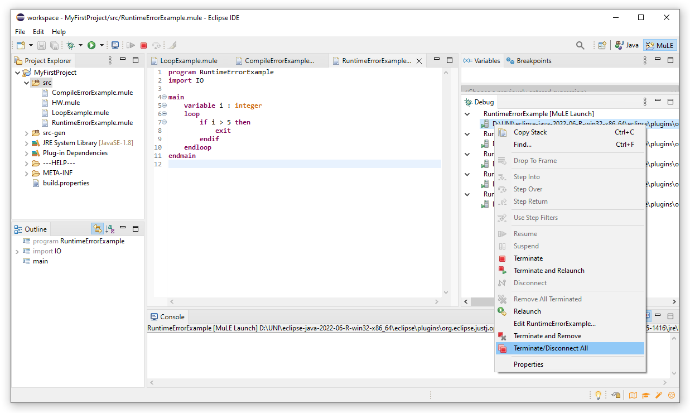

Life would be so much easier if everything would just work as expected, sadly it is often not quite the case.
Here we will attempt to gather (technical) problems and their solutions.
If you encounter a problem which is not listed here, please contact the author of this website (link in the bottom right corner).
The most common and the most easy-to-fix errors are compile time errors.
If our written code breaks the rules defined by the language, such as writing a keyword wrongly or referring to non-existing variable, the code cannot be compiled and the offending piece of code is marked.
This means we cannot execute our program until we fix the error.
In the example below we wanted to store apple as our item, however apple is marked red and the corresponding error message is that we cannot resolve reference to a NamedElement called apple.
The problem is that we refer to a non-existing element, hence the error message. Our intention was most likely to just store a string value in the variable item.
We can either write "apple", i.e. as a string, or introduce a string variable called apple to fix this error.
As we can see, quick fixes are offered for most of the compile time errors, however in this specific case, none of the offered quickfixes would help, meaning that you need to use this feature carefully.
Another type or errors are those caused at runtime, these errors are a little bit harder to fix.
Unlike compile time errors, the program can be compiled and executed, but crashes during the execution.
The corresponding error message is displayed in the console, you have to read the error message in order to understand what went wrong.
Debugging the program, i.e. setting a breakpoint and executing the program step-by-step, is often a good start when trying to fix such errors.
In our example below, the error message is Exception in thread "main" java.lang.IndexOutOfBoundsException: Index 3 out of bounds for length 3.
That means that:
Sometimes we forget to correctly implement the termination of a loop, which will result in an endless loop.
In the screenshot below we can see such an example, our programm is running although it seems as if nothing happens.
The value of our variable i will be forver 0, meaning that the programm will run forver until terminated by other means.
We can also see in the debug view, that our program is running.
To terminate the program, we have to press the red stop button in the console view.
If we don't terminate such programms and keep executing new programs instead, we will put a strain on the ressources of our machine.
However, sometimes we are pretty sure that we are right and the program is wrong and it should run so we keep pressing that green button.
Sadly the program still won't do as expected and instead the fans of our computer start to get louder and our machine starts to get slower.
We have started several programs, all of them doing nothing except for eating our ressources.
As we can see in the screenshot below, we have five programs running, we can select each of them and terminate them one by one as described previously.
Or we can right click one of them and select Terminate/Disconnect All.
